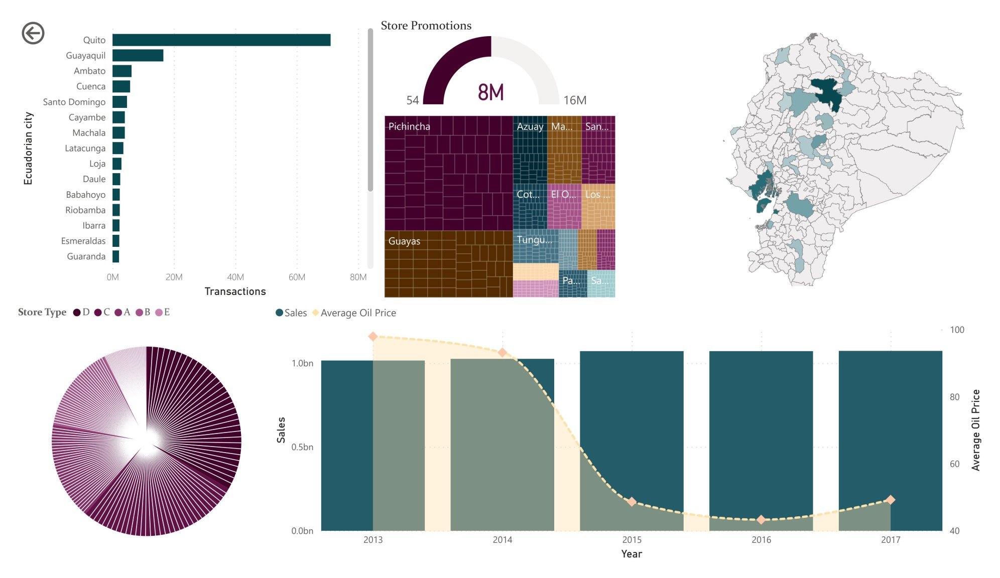

Favorita Store Sales EDA
Overview
This project began as part of Kaggle's "Store Sales – Time Series Forecasting" competition for Corporación Favorita, a major South American supermarket chain based in Ecuador. My original plan was to start with a full exploratory data analysis, then move into building a forecasting model. I didn't end up reaching the forecasting stage — instead, this project became focused on SQL data cleaning and descriptive analysis.
I was genuinely curious about the ins and outs of the company and its products, and wanted to see what hidden insights I could uncover in the data beyond just prepping it for modeling. One open question that stuck with me throughout was how Favorita categorized its stores under the type column (A, B, or C) — the logic behind that classification wasn't something I could fully pin down from the data alone.
Analysis
I chose SQL Server for this project simply because I love working in the language and wanted the hands-on practice.
I started by bulk inserting the raw Kaggle CSVs into SQL Server, using hexadecimal notation to handle line feed (LF) row terminators during import — a workaround I ended up needing when trying to get portions of the data into another format, likely Excel. The full dataset turned out to be too large to export directly to CSV, so I worked with a sampled subset instead.
Cleaning began with the Holidays_Events table (350 records, no nulls), followed by Oil (1,218 records, replacing 43 null oil prices with zero), Stores, Train (over 3 million records), and Transactions — standardizing date columns and renaming inconsistent column names along the way.
Once the core tables were clean, I moved into relating them: using queries like pragma table_info to understand each table's structure, then joining store, sales, promotion, and transactional data to build a fuller picture of the dataset.
From there, I ran summary queries — counts, sums, and date-range checks — across stores, products, and transactions. One store in particular, Store 44 in Quito, Pichincha, kept surfacing across multiple features throughout the EDA, which led me to dig deeper into it specifically, including how it was affected by the April 16, 2016 earthquake.
Results

Based on visual inspection of the Power BI dashboard above, annual sales trended as follows (approximate, read from the chart rather than pulled directly from the dataset):
| Year | Estimated Sales |
|---|---|
| 2013 | ~$1.07B |
| 2014 | ~$1.01B |
| 2015 | ~$0.25B |
| 2016 | ~$0.08B |
| 2017 | ~$0.25B* |
*2017 reflects a partial year, as the dataset ends August 15, 2017.
These estimates suggest a steep decline from 2013's peak, with sales dropping roughly 92% by 2016 before an uptick in the 2017 partial-year figures. The sharpest single-year drop appears between 2014 and 2015, an estimated 75% decrease.
Across the 54 stores, clear regional and promotional patterns also emerged. Stores in Quito, Pichincha led in maximum transactions, while Store 53 in Manta, Manabí stood out for having the highest number of on-promotion items. Store 53 and 54 (Grocery 1 and Cleaning families) and Store 53 (Beverages and Produce families) showed the highest on-promotion growth tied to "Transfer" status holidays, and Store 49 in Quito saw substantial promotion growth across three separate holiday occasions.
Daily oil prices (WTI) ranged from a low of $26.19 to a high of $110.62 over the dataset's timespan, with several stores showing a stable $47.57 price point recorded on August 15, 2017.
The most striking finding came from examining the April 16, 2016 earthquake's effect on Store 44 in Quito, Pichincha — the store with the highest transaction volume in the entire dataset. Despite its resilience, it experienced a 74% drop in transactions following the earthquake, underscoring how even top-performing locations were vulnerable to major external disruptions.
Conclusion
My biggest takeaway from this project is a note of caution more than a finding: the conversion and saving process I used while working with this dataset introduced real uncertainty into my results. Given the issues I ran into exporting and sampling the data, it's entirely possible some of the analysis above doesn't fully reflect the original dataset accurately.
One question I never resolved was how Favorita's store type classification (A, B, or C) was actually determined — the dataset didn't make that logic clear, and it remains an open curiosity for me.
Looking ahead, I'd like to revisit this project from the start rather than build directly on top of what's here, given the real possibility that the dataset was corrupted or altered during conversion. Once I have a clean, verified dataset, I'd like to pick back up where I originally intended to go: building an actual forecasting model for the Kaggle competition.